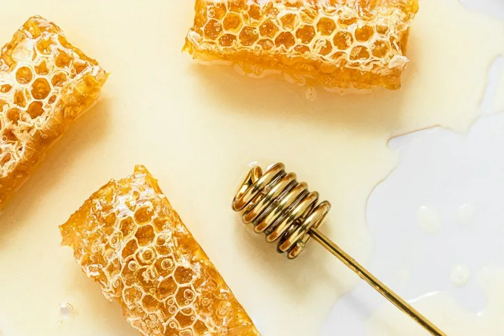

Importation & Wholesale Distribution
Penyediaan pasokan berskala besar dan importasi legal produk kesehatan kelas dunia. Meliputi obat tradisional berkhasiat, suplemen nutrisi lebah murni, pangan fungsional terdaftar, hingga produk perawatan tubuh.